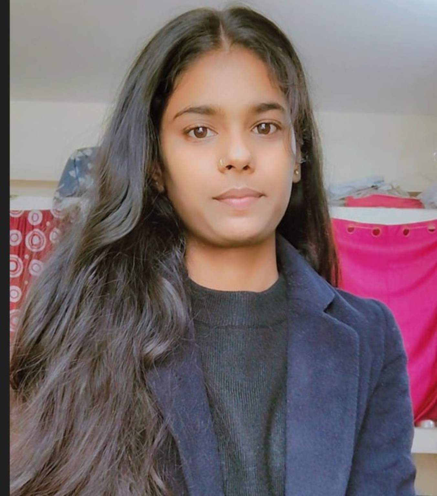

Machine Learning & AI
Machine Learning · Deep Learning · Artificial Intelligence · Computer Vision · Classification · Predictive Modeling
Aspiring AI/ML Engineer and Data Analyst with hands-on experience in Machine Learning, Deep Learning, Computer Vision, Data Analytics and Data Visualization.

I'm a Computer Science & Engineering student at Purnea College of Engineering, pursuing my B.Tech from 2023–2027.
My interests and practical work focus on Machine Learning, Deep Learning, Computer Vision, Data Analytics and Data Visualization. I enjoy turning datasets and ideas into practical, understandable solutions.
Machine Learning · Deep Learning · Artificial Intelligence · Computer Vision · Classification · Predictive Modeling
Data Preprocessing · EDA · Feature Engineering · Data Visualization
TensorFlow · Keras · OpenCV · Pandas · NumPy · Matplotlib · Seaborn · Scikit-learn
Python · C · C++ · JavaScript · SQL
PostgreSQL · SQLite · DSA · OOP · DBMS · Computer Networks
Git · GitHub · VS Code · Arduino IDE
Purnea College of Engineering, Purnea
CGPA: 8.44Govt. Girls High Secondary School, Patna
82.2%Vishashvi Public School, Patna
82.6%Worked on Artificial Intelligence, Machine Learning, Deep Learning, CNN and NLP concepts through practical implementation, including handwritten character recognition.
Completed an offline internship focused on Python application development using OOP, SQLite and PyQt, including a Data Entry Form and practical mini projects.
Developed a CNN-based handwritten digit recognition system using the MNIST dataset, with image preprocessing and normalization. Implemented model training and prediction using TensorFlow and Keras.
View on GitHub ↗Developed an emotion recognition system using the RAVDESS audio dataset for classifying different human emotions. Processed WAV audio data and applied machine learning techniques for classification and evaluation.
View on GitHub ↗Developed a Logistic Regression-based disease classification model using patient-related features. Performed preprocessing, feature-target separation, 80:20 train-test splitting and model serialization using Pickle.
View on GitHub ↗Analyzed 40,000 agricultural records to identify seasonal patterns, crop performance and trends. Compared Kharif, Rabi and Zaid using rainfall, crop yield, water usage and farm profit.
View on GitHub ↗Performed analysis of vehicle prices, manufacturing year, fuel type, transmission and ownership patterns. Conducted missing-value analysis, descriptive statistics and answered 25 analytical questions.
View on GitHub ↗13 verified certificate images — click any card to view it larger.
Open to internships, learning opportunities and entry-level roles in AI/ML and Data Analytics.